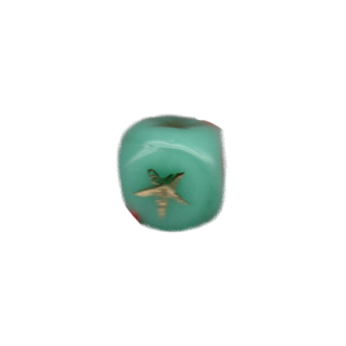

<!DOCTYPE html>
<html lang="kr"></html>
<head>
  <meta charset="UTF-8">
  <meta http-equiv="X-UA-compitable" content="IE-edge">
  <meta name="viewport" content="width=device-width", initial-scale="1.0">
  <title>h</title>
  <link href="h.css" rel="stylesheet">
  <script type="text/javascript">
    document.oncontextmenu = function(){return false;}
    function redirectToRandomPage() { 
            // Array of specific pages on the website 
            const pages = [ 
                'index4.html', 
                'index11.html', 
                'index18.html', 
                'index25.html' 
            ]; 
            // Generate a random index 
            const randomIndex = Math.floor(Math.random() * pages.length); 
            // Redirect to the randomly selected page 
            window.location.href = pages[randomIndex]; 
    }
  </script>
</head>
<body oncontextmenu="return false" onselectstart="return false" ondragstart="return false" onkeydown="return false">
  <div class="box-container">
      <div class="box-item1">
        <div class="map">
          <a onclick="redirectToRandomPage()">
            
          </a>
          <p>논문 발췌</p>
          <div class="comment">
            <p>해러웨이의 &lt;사이보그 선언문&gt;을 독해하는 데 도움이 되는 논문의 일부를 발췌한 페이지. 다양한 논의를 통해 해러웨이의 세계관을 깊이 이해할 수 있다.</p>
          </div>
      </div>
    </div>
    <div class="box-item2">
      <div class="container">
        
        <div><a href="h_1.html">
          다나 J.해러웨이의 사이보그 페미니즘 시각으로 분석한 사이보그 캐릭터 연구 -&lt;공각기동대&gt;, &lt;이노센스&gt;의 여성 캐릭터를 중심으로-
        </a> / 
        <a href="h_2.html">
          사이보그 영화로 고찰하는 사이보그 여성주체
        </a> /
        <a href="h_3.html">
          사이보그 캐릭터 유형의 변이 연구 - &lt;공각기동대&gt;의 매체 변화를 중심으로
        </a> /
        <a href="h_4.html">
          ‘포스트휴먼 페미니즘’ 사유의 전개와 특성: 한국 학술지 논문을 중심으로
        </a> /
        <a href="h_5.html">
          정보사회의 '탈육체' 경향과 물리적 고통의 문제: 사이보그(cyborg)와 가상 신체(wirtual body)를 중심으로
        </a> /
        <a href="h_6.html">
          포스트휴먼 시대 사이보그 몸 이미지 연구 -오를랑과 스텔락을 중심으로-
        </a> /
        <a href="h_7.html">
          SF영화에 나타난 여성 캐릭터 변화 연구 (할리우드 영화를 중심으로)
        </a> /
        <a href="h_8.html">
          과학기술로 인한 인간 경계 해체와 예술을 통한 새로운 만남의 가능성: 도나 해러웨이(Donna J. Haraway)의 논의를 중심으로
        </a> 
      </div>
      </div>
    </div>
    <div class="box-item3">
      <a href="d4.html">
        </a>
        <span class="text1">d. 픽션 속<br>사이보그적 여성</span>
      <a href="e4.html">
        </a>
        <span class="text2">e. 그 자체로<br>신성한 것은<br>없다 </span>
      <a href="l4.html">
        </a>
        <span class="text3">l. 사이보그적 존재들의 확장된 신체</span>
      <a href="n4.html">
        </a>
        <span class="text4">n. 역사 속<br>사이보그적 여성</span>
    </div>
  </div>
</body>